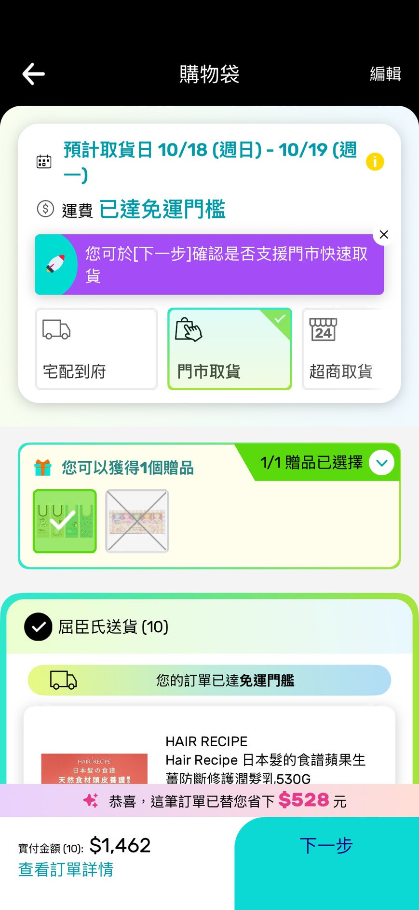
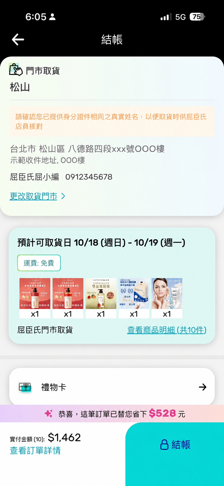
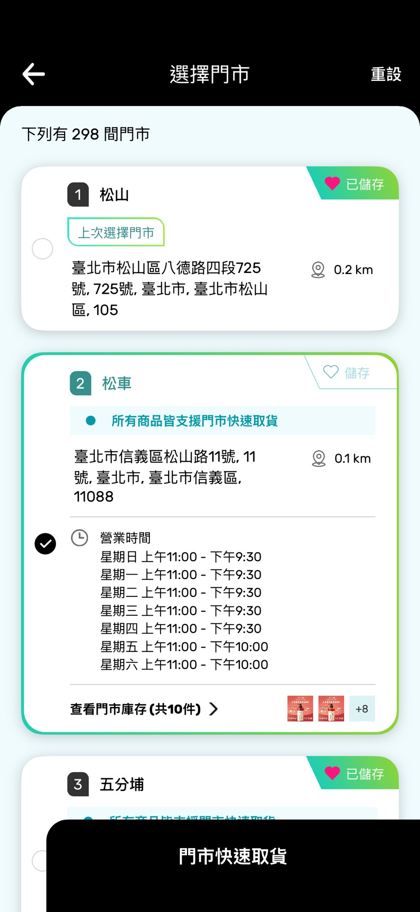
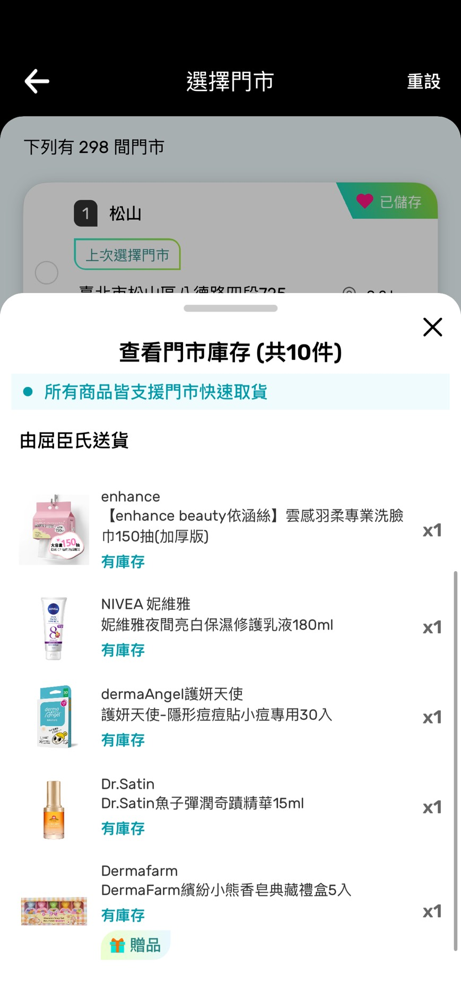
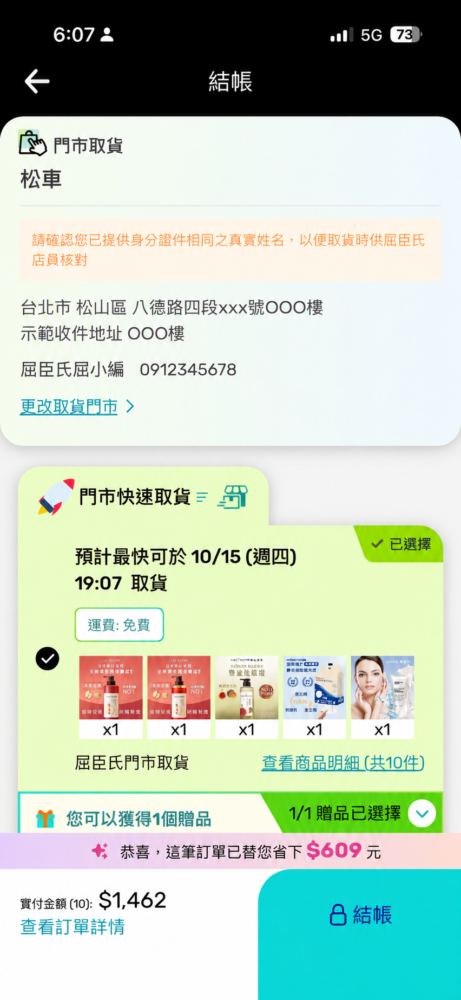
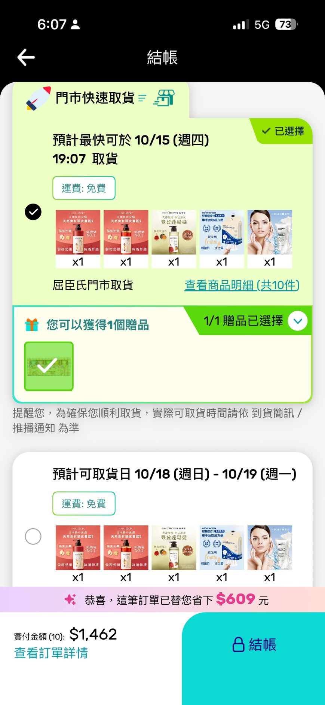
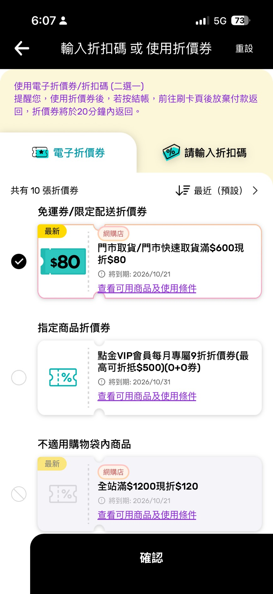
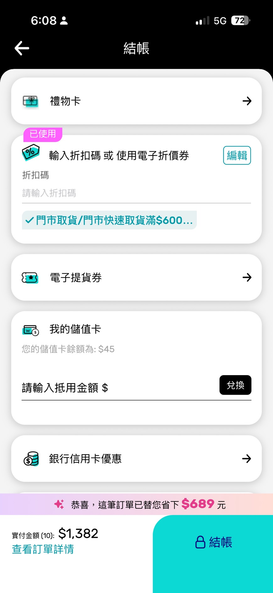

A LITTLE EASIER, EVERY DAY
喜歡的，
順路帶回家。
順路帶回家。
什麼是門市快速取貨？
先在線上買好，回到熟悉的門市取貨。
在屈臣氏官網或 APP 選購，選擇門市取貨，再確認門市是否顯示快速取貨提示。可使用的門市依購物袋商品、門市庫存與結帳頁顯示為準，收到取貨通知後再出發。
在屈臣氏官網或 APP 選購，選擇門市取貨，再確認門市是否顯示快速取貨提示。可使用的門市依購物袋商品、門市庫存與結帳頁顯示為準，收到取貨通知後再出發。
把取貨排進日常行程，先在線上挑好，再到方便的門市領取。
在屈臣氏官網或 APP 選購，加入購物袋並選擇門市取貨。
依距離、營業時間與庫存，確認支援快速取貨的門市，再完成下單。
收到取貨簡訊後，依通知內容及門市營業時間前往領取。
從選門市、查庫存到優惠結帳，一次看懂門市快速取貨（CCE）與一般門市取貨（CCS）的操作方式。
將商品加入購物袋後，選擇「門市取貨」並點選「下一步」。接著就能確認附近哪些門市支援購物袋商品的快速取貨。

在結帳頁的門市資訊區點選「更改取貨門市」，開啟門市清單，查看附近可選擇的取貨地點。

選店時除了距離，也請查看營業時間與「所有商品皆支援門市快速取貨」等提示。點選「查看門市庫存」可展開商品明細；若有缺貨，請先確認提醒，再決定取貨門市。


需要儘快拿到商品，可選擇支援服務的門市並確認「門市快速取貨」與預計取貨時間。若希望使用倉庫出貨的整箱包裝，也可改選一般門市取貨，等待商品配送到門市。


查看當期是否有門市取貨或門市快速取貨適用的優惠券。選擇符合條件的電子折價券或折扣碼，確認已套用與實付金額，再完成結帳；收到取貨通知後再前往門市。


| 服務重點 | 閃電送 HDE | 門市快速取貨 CCE |
|---|---|---|
| 收貨方式 | 配送至支援的收件地址 | 收到通知後，自行到門市領取 |
| 最快時效 | 最快 1 小時送達 | 最快 1 小時收到取貨通知 |
| 免運門檻 | 單筆滿 $688 | 單筆滿 $290 |
| 服務確認 | 依地址、庫存與配送條件 | 依門市、庫存與結帳頁提示 |
最快時效均有適用條件；完整服務規則請參閱各頁注意事項與結帳頁面。
支援快速取貨的門市最快 1 小時完成備貨並發送簡訊。請收到取貨通知後再前往；實際狀況依門市營業時間、庫存及人力而定。
依官網物流資訊，門市快速取貨滿 $290 免運。實際金額與可使用服務請於結帳頁確認。
實際可快速取貨的門市以結帳頁面為準。選擇門市時，請確認是否顯示橘色的快速取貨文字說明及符號。
本頁原有注意事項載明接單時間為上午 11:00 至晚上 21:00。超過晚間 21:00 的訂單，將於隔日上午完成撿貨並發送簡訊通知。
快速取貨依門市可用庫存備貨，最快 1 小時收到取貨通知；一般門市取貨由倉庫配送到店，約需 2–3 個工作天，實際以結帳頁預計日期及到貨通知為準。若快取無法完成，原有注意事項載明會以簡訊通知，轉為一般門市取貨，約 1–3 天送達。
前往選購，於結帳頁確認可使用的服務。